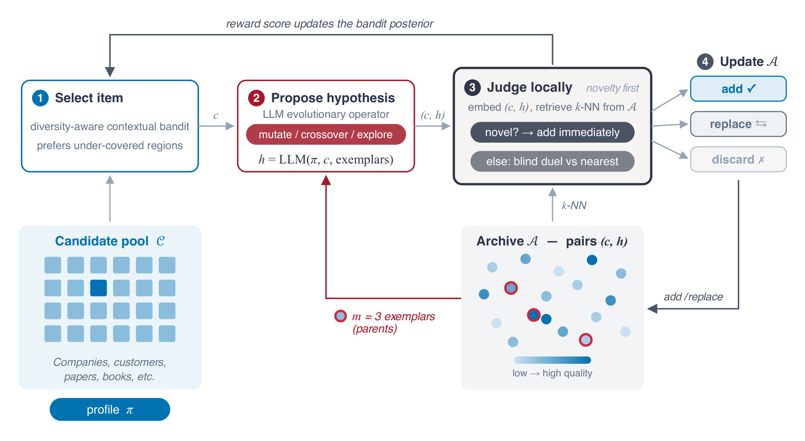
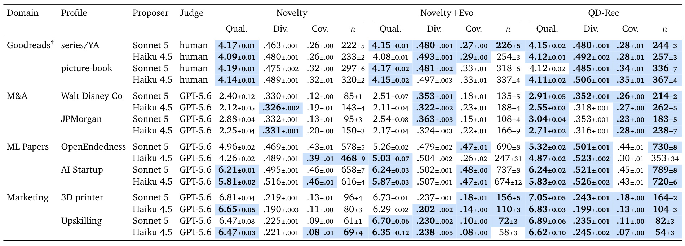
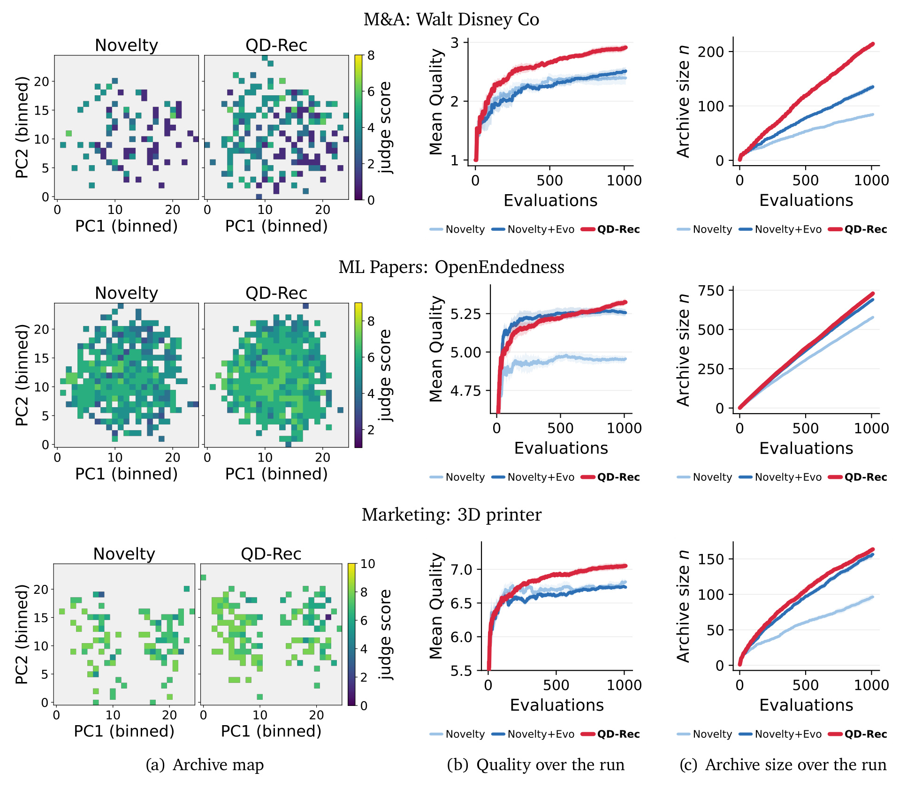
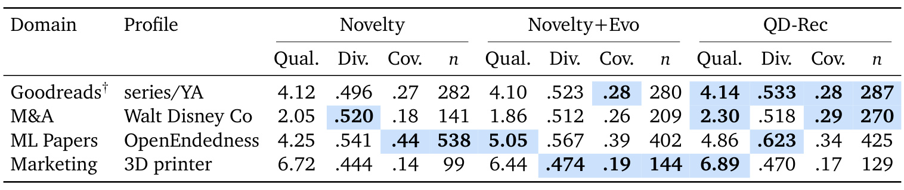
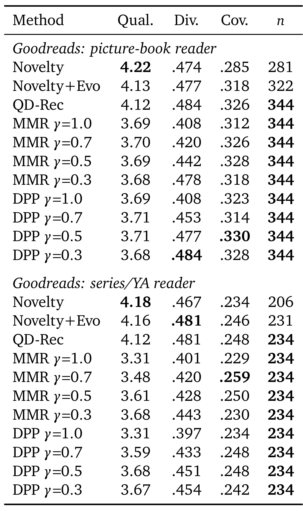

QD-Rec：在固定候选池中演化推荐理由
- 论文：QD-Rec: Open-Ended Evolution of Recommendations via Quality–Diversity
- 作者：Takashi Ishida、Taro Makino、Issa Sugiura；机构：Sakana AI。
- 首次公开：2026-10-16 13:49 UTC，北京时间当日21:49；PDF封面标注2026-10-19，两者不是同一个日期口径。
- 原文：arXiv论文入口；读取日期：2026-10-20。
- 代码状态：PDF列出的SakanaAI/QD-Rec地址本轮返回404，尚未核验到可用公开仓库；不能据此声称实现已开放。
1. 背景和问题
候选物品虽然固定，但选择同一个物品可以有许多不同理由；对于需要比较多种战略方案的决策者，系统应搜索高质量且多样的“物品—理由”组合，而不是只返回一份排序列表。这句话来自论文摘要和引言的核心设问。它把推荐任务的开放性从“还有什么新物品”移动到“已有物品还能如何匹配我的目标”。例如，一家公司作为收购对象，可以服务于进入新市场、补齐能力、纵向整合，也可能因为交易结构不同而呈现完全不同的价值；单一相关性分数会压缩这些互不等价的决策角度。论文希望保留这种分歧，让人比较候选方案及其论据，而不是替人给出确定的唯一答案。
这里的推荐对象有两个层次。第一层是固定候选集合，例如已经存在的公司、给定客户画像、已发表论文或者书籍。第二层是模型针对特定决策者写出的自然语言假设，说明这个物品为什么值得考虑。两层组合才是一条推荐。同一篇论文可以因为适合研究新颖性度量而被推荐，也可以因为适合验证带反馈的搜索算法而被推荐；两条假设可能触发不同的实验计划。传统多样性重排主要改变物品组合，而本文还把解释本身放进搜索空间，因此要区分物品覆盖与理由覆盖，不能把生成不同措辞直接视为发现不同兴趣。
作者受到质量—多样性搜索的启发。它追求的不是一个全局冠军，而是在多个行为区域内保留有价值的解。通常的精英档案会把表现相近的候选放到同一区域内竞争，同时留下不同区域的代表。推荐场景里，很难事先为公司收购理由或研究阅读角度手工划出稳定网格，于是本文借助语义嵌入找邻域，再由语言模型判断新假设是否真正不同。二维地图只在实验展示时建立，并不作为方法的固定入档坐标，这一点可以避免把可视化误认成算法的核心数据结构。
评价成本是第二个出发点。物品自身的描述可以预先编码，但一个推荐的价值需要先生成理由，再请求评委或者读取真实评分；不能在搜索前给无限多条理由都打分。有限预算因此要在两个方向上分配：一方面尝试预测分数较高的候选，另一方面探索档案尚未覆盖的区域。只反复生成高分物品的同质理由会浪费预算，只追求新颖又可能保留大量质量很低的方案。论文把物品选择交给上下文多臂老虎机，把理由生成交给冻结的大模型，把保留与淘汰交给局部新颖性和局部质量比较，使这三个决策环节形成反馈循环。
它与“先解释后推荐”也存在差别。在常见可解释推荐中，解释是某次排序结果的附属产物，或者只是向用户展示预测原因。这里的旧理由会进入后续生成提示，成为可变异和可交叉的材料。因此一条分数很低的理由也可能有用：它可能含有能迁移到另一物品的策略角度。附录中的航空公司收购理由虽然只有一分，但其中把旅行消费连接到支付和奖励体系的思路，后来被迁移到旅行平台收购对象，生成五分理由。这说明“保留暂时不强的垫脚石”有具体含义，但也同时说明档案中保存的并不都是可以直接行动的优秀建议。
本文的“开放式”不意味着系统发现了候选池之外的新物品，也不意味着它能持续无界地产生真实知识。候选池保持不变，大模型也没有在搜索过程中更新参数。变化发生在选择策略的后验、已保存的理由集合以及下一次提示所看到的示例上。一个运行面向单一决策者画像，最终输出整个档案；它既不是面向大量用户训练的协同过滤模型，也没有把线上点击率或购买转化当作主要目标。因此，把本文归为推荐算法与大模型交叉方向是合适的，但拿它替代常规精排器需要额外证据。
还需要预先明确“质量”由谁定义。在并购、营销和论文阅读三个领域，质量来自另一个大模型对物品及理由的评分；在书籍领域，质量来自历史读者星级，并且不随生成理由改变。这两个信号回答的问题并不相同：前者评价论证的可信吸引力，后者评价这个物品对读者的已知喜好。它们都不能自动推出实际商业收益或用户愿意采纳理由的程度。论文使用跨模型家族的生成器和评委减少自偏好，但不能消除共同知识偏差、表达风格偏好和奖励迎合。
阅读这篇工作的价值，是理解一种把推荐结果集合当作长期搜索状态的机制。对于研究选题、商机发现、候选合作方探索等低频且需要解释的决策，多个差异化假设可能比单一打分更有帮助。与此同时，越是高影响场景，越需要把生成理由中的事实核验与主观价值判断分开。本文自己的案例已经暴露过时公司状态和无法验证的经营数字，因此它更像可供人类审核的方案搜索器，而不是经过业务验证的自动决策系统。以下方法和实验的解读都围绕这个适用范围展开。
从相关工作的位置看，它结合了三条研究线索：在群体中保留行为差异的质量多样性方法、让基础模型读取旧解并生成新解的演化循环，以及需要在未知奖励下分配有限评价预算的上下文选择器。三者分别解决保存什么、如何提出新假设以及下一步评价谁的问题。过去把多样性放到最终列表重排，往往只能利用事先计算的相关性；本文把多样性移到搜索过程的每次入档，让保留下来的差异继续影响未来生成。这种位置变化正是它希望检验的增量贡献，而不是证明自然语言解释本身首次出现在推荐系统中。理解这个增量，有助于把贡献限定在有反馈、可存档、可反复生成的具体任务设定内。
2. 方法
2.1 局部新颖性、盲比与档案更新
设固定候选池为集合 $\mathcal C$，决策者画像为 $\pi$，理由为 $h$。推荐条目 $x=(c,h)$ 同时包含物品和理由，档案条目的嵌入来自结构化物品资料与理由拼接后的文本。入档先判断新颖，只有不新颖的条目才与最近邻盲比质量。新条目先检索三个近邻，由评委判断其对当前画像是否带来新的选择角度；如果新颖便直接加入。如果不新颖，只挑战其中最相似的一个近邻。两条理由匿名、随机交换位置，并隐藏已有逐点分数，评委必须二选一。新条目胜出就替换该近邻，失败则丢弃。由此避免用一条笼统分数阈值来决定所有区域的生死，也避免评委仅因知道条目是新生成的而偏袒它。
符号解释：$e_i$ 是物品与理由合成的档案嵌入，$\mathcal A$ 是当前档案，$k=3$。这里的近邻决定比较范围，真正的新颖判断仍由语言模型完成，不等于余弦距离超过统一阈值。这个区分使语言模型能够根据画像判断两个语义接近的理由是否属于不同的实质选择角度，但也意味着新颖标签本身具有提示敏感性。邻域检索只压缩比较成本，不提供关于真实兴趣差异的确定性保证，若嵌入漏掉重要对手，评委也可能把重复理由误认为新颖。

图中左侧候选池始终固定，右下角档案保存的则是物品与理由组合。上方蓝色模块负责选下一个值得花评价预算的物品，红色模块读取画像、物品和随机抽到的三个旧理由，生成新理由，灰色模块先查询局部语义邻域再做入档判断。右侧三个出口分别对应新增、替换和丢弃，只有前两者改变档案，但上方奖励反馈箭头仍会把每个已评价条目的分数返回物品选择器。因此，“被拒绝”与“没有学到东西”不是一回事。图中红色回路说明旧档案如何影响新理由：它提供的不是可直接复制的答案，而是可以迁移的推理角度。灰色回路说明比较所需的语境：新颖性需要看三个近邻，质量竞争却只针对最近的那个，二者调用范围不相同。还要注意图中的颜色渐变只是示意质量高低，并没有编码真实实验数字，也不是给入档设置最低分数。一个低质量但足够新颖的条目仍可能被保留，后续可能成为有用的演化材料，也可能污染示例池。最终档案因此兼具记忆、候选集合和父代群体三个角色，不能把它理解为只保存已经审核通过的强推荐列表。本文对这种结构的检验，是看固定预算下最终集合的平均分数、语义距离、地图覆盖和规模能否同时改善，而不是仅检查一次生成是否更流畅。另一个值得观察的结构细节，是蓝色选择器读取纯物品特征，灰色局部评委读取物品与理由组合。这条信息边界让选物成本可控，却使选择器无法提前知道哪种具体理由会成功，因此后验的不确定性也包含生成策略波动。
质量评估在每条理由生成后进行，分数随后归一化给老虎机。逐点分数与盲比并非同一信号：前者用于学习和最终报告，后者决定非新颖条目的替换。二者可能不一致，因而不能推导每次替换都使所报告的平均分单调上升。新颖条目的直接加入也可能降低平均质量。正是这个设计允许弱中间解存活，但它没有给高影响应用提供自动的质量下限；实际部署若额外增加最低可信度门槛，就属于对原方法的修改，需要重新评价是否破坏垫脚石机制。
符号解释：$q(x)$ 是原始评分，$q_{\max}$ 是评分量表上限；一般领域为十分，书籍为五星。归一化是为了统一选择器的奖励范围，不会让这两种评价具有相同业务含义。书籍五星反馈可以稳定指向历史喜好，却无法奖励理由论证的进步；并购十分反馈则可能随着表述方式改变而变动。因此同一个归一化奖励接口隐藏了不同领域的因果结构，解释跨域结果时还需要回到分数产生机制。
2.2 线性Thompson选择与覆盖奖励
物品选择用另一套预先计算的单位长度嵌入 $\psi(c)$。它只编码物品文本，不含生成理由，避免每次选择前就必须先生成假设。作者用贝叶斯线性回归预测归一化奖励，再通过Thompson采样表达当前不确定性。初始化精度为一、噪声标准差为零点一，从十条种子档案的评分热启动。每次生成的新理由即使最终被丢弃，分数仍更新后验，这样昂贵的失败评价也能改变后续物品选择。不过相同物品的理由会得到不同分数，而模型只观察物品特征，因此它实际把理由生成质量的波动也吸收到奖励噪声中，存在物品价值与生成策略相互混杂的问题。
符号解释：$\theta$ 是未知线性奖励参数，$\lambda$ 控制先验精度，$\sigma$ 描述观察噪声。线性形式使更新便宜，但不是关于真实偏好的普遍规律。
符号解释：$\mathcal D$ 是已完成评价的记录，矩阵 $A$ 为后验精度，向量 $b$ 汇总奖励与物品特征的关系。它与花体档案 $\mathcal A$ 不同，前者会保留被丢弃条目贡献的信息。
符号解释：新观察只需要外积和向量累加即可更新充分统计量；这不是对提议大模型做反向传播训练。
符号解释：$\mathcal R$ 保存已入档物品的嵌入，$d$ 表示距最近已覆盖物品的余弦距离，$\beta$ 平衡采样质量估计和覆盖探索。多样性只改变选择分数，没有被加进真实奖励。已在档案中的同一物品距离为零，所以通常不会反复被选；原则上算法允许同一物品出现多条理由，但作者观察到最终QD-Rec档案没有重复物品。这里还存在两种不同的多样性：选择器按纯物品嵌入探索，入档按物品加理由嵌入检索，两者不能混用。前者鼓励选择没覆盖的对象，后者才能判断对象相近但战略角度不同的方案。
2.3 理由演化与批次协调
选定物品后，提议器从当前档案均匀抽取三个父代示例，在单一提示中选择变异、交叉或探索。变异把一个旧理由的角度改写到新物品上；交叉合并多个父代互补角度；探索提出当前示例没有涵盖的新角度。模型同时返回操作类型和来源编号，使理由的演化路径可追踪。最终面向读者的理由仍须独立成文，不能把“第二个例子”之类上下文残留带进去。均匀采样意味着低分理由仍有机会作为父代，体现开放搜索对中间步骤的容忍；但论文没有证明这种父代策略优于按分数、最近贡献或使用频率挑选，作者把这些列为未来方向。
实现采用每代最多二十个并行评价，所有工作单元先看到同一个档案快照。选取一个批次时，为每个位置独立抽后验参数，已选物品从当前批次候选中排除，并临时加入覆盖集合，使同批物品也互相排斥近重复。批次结束后统一协调：过滤多个新增条目之间的近重复，处理多个替换操作同时命中同一旧邻居的冲突，再进入下一代。因此并行版本不是把串行算法机械运行二十份；如果省掉协调，多个工作单元可能各自相对旧档案显得新颖，但合并时却高度同质，或者重复消费同一替换位置。训练与推理也没有常规分界：大模型始终冻结，搜索期间在线更新的是老虎机后验和档案，最后直接返回档案，不存在额外训练出的独立推断网络。
符号解释：$n$ 是最终活跃档案大小。质量取原始量表平均分，多样性取全部条目嵌入的平均两两距离。公式进一步表明，档案规模变大并不必然使多样性变大，生成更多相近区域内的细分理由就可能增加条目而几乎不改变平均距离。
3. 实验结果
3.1 四个领域与主结果的量表边界
实验覆盖四个领域、每域两个画像、两个提议模型。主提议器为claude-sonnet-5，弱提议器为claude-haiku-4-5，语言模型评委为不同家族的gpt-5.6-terra。每个配置进行一千次评价循环，重复五个随机种子。默认嵌入为五百一十二维输出并做归一化。Novelty随机选物品且不看父代，Novelty+Evo随机选物品但看父代，完整QD-Rec再增加覆盖感知的老虎机。

这张表把每种方法的质量、多样性、地图覆盖和档案规模并列，必须逐列读，不能把某一列最佳概括为全面领先。迪士尼并购画像在强提议器下，质量由Novelty的2.40上升到2.91，档案规模由85增至214；在摩根大通画像下，相应质量为2.88与3.04。这些分数依然处于十分量表较低区间，说明相对提升并不意味着推荐已达到业务可执行标准。开放式研究者画像在强提议器下，三种质量分别为4.96、5.26和5.32；但弱提议器下，演化消融为5.03，完整方法为4.87，不能声称老虎机在每个场景都提高质量。书籍领域的真实星级通常维持在四分左右，完整方法并没有一致最高，绘本强提议器的平均分还从4.19降至4.12。表内蓝色不仅标最佳均值，也标与最佳未显著区分的单元，显著性为五种子配对双侧检验且未做多重比较校正。“未显著更差”与“证明等价”不同，需要保留统计能力有限的边界。不同领域的量表和评价主体也不能混为统一收益。
领域设计决定了这些数字如何解释。并购池有六千三百三十二家美国公司，使用商业描述、行业和财务快照；营销池是一万条加州合成人物画像；论文池包含一万七千五百一十一篇会议论文的标题摘要；书籍池来自读者已打分的儿童书。研究论文只看到摘要而非全文，因此评价的是阅读方向备忘录，不是对技术正确性的深入审稿。营销人物也是合成画像，不能拿其评分当真实用户行为。每域只用两个固定需求画像，范围多样但用户覆盖很窄，尤其不能从两个读者推断广泛个性化能力。
覆盖率另有独立口径。作者对同一画像、提议器和随机种子下三种方法的最终档案并集做二维主成分投影，再用二十五乘二十五网格统计占据格子比例。共享投影让该小组的方法可以比较，但不同画像或种子使用不同坐标边界，覆盖率不能跨小组直接当作绝对能力标尺。质量是搜索过程中已有分数的最终档案均值，也没有使用独立隐藏评委重新给最终方案打分。因此较高质量反映对当前评价信号的优化，尚不能排除自适应搜索对评委偏好的累积利用。
3.2 搜索轨迹、档案规模和预算收益

图左是Novelty与QD-Rec的档案地图，中间是每轮后的平均质量，右侧是活跃档案规模；三行分别为迪士尼并购、开放式研究者和三维打印营销。横轴是已消耗评价次数，阴影表示五种子均值的标准误。可以看到完整方法并非仅在最后截取一个小而精的集合：并购场景中它一边增大档案，一边逐步提高平均质量，支持“更多方案与较好分数可以同时获得”的主要叙事。研究者场景则提供时间维度的反例：演化消融在早期可能更高，完整方法到后期才超过它，固定少量调用预算的用户未必能复现最终排序。地图颜色表示格子内最佳质量而非平均质量，点云铺得更满也不等价于所有推荐都更优。附录把轨迹扩展到全部八个画像，指出语义多样性往往在前约一百次后变化不大，而档案数量仍继续增长；这符合局部新颖性允许在原有语义区域内继续细分假设的机制。因此，持续扩档主要证明发现了更多被评委接受的差异化理由，不能直接当作持续扩大真实兴趣边界或产生商业价值的证据。
成本按一次运行的模型API标价估计，覆盖提议器、评分、新颖性判断、对决和嵌入，老虎机在本地执行没有额外API费用。论文没有保存运行时逐次token消耗，而是重发八百四十个归档调用样本估计单类调用成本，再乘原运行精确调用次数。完整方法与演化消融成本相近，约为零样本Novelty的1.3倍，超过九成差额来自父代示例使提议器输入大约增至三倍。一次一千评价运行约十三至六十二美元，书籍由于用历史星级替代语言模型质量评分和对决而最便宜。这是重建估计而非逐笔账单，也不是服务延迟、算力或线上吞吐的测量，无法据此声称实时推荐部署成本低廉。
这组成本结果真正说明的是，在线性选择器本地运行的前提下，把随机物品选择替换成老虎机并没有显著增加API调用费用；相比之下，在提示中加入旧理由才是主要开销。若实际系统需要独立事实核验、人工复核或者访问候选的完整资料，成本结构可能明显改变。预算还应该同时报告每次运行的时间、评委稳定性以及最终可用方案数量，论文仅按评价次数做匹配，不能把所有配置的有效信息量视为完全相等。
3.3 嵌入变化与弱模型限制

表三把嵌入换成截断到同样五百一十二维的Qwen3-Embedding-0.6B，选择每域一个画像，用弱提议器、零号种子重新运行。由于本地计算限制，批大小同时从二十降为十六，因此它不是只改变嵌入的严格单变量实验。迪士尼质量从Novelty的2.05到完整方法2.30，开放式研究者却仍由演化消融5.05领先完整方法4.86，说明主表中的相关排序并非只在一种嵌入空间中出现。研究者档案数量更由Novelty的538领先完整方法425，进一步反驳完整方法总是扩出最大档案的误读。各方法的多样性分数普遍变高，是嵌入本身分布更分散，不能拿新表的0.623与主表旧嵌入的值直接宣布语义覆盖跃升。作者只做一次运行，没有显著性检验，表中蓝色标最佳单元而非统计置信。它提供有限稳健性线索，不能支持对任意嵌入模型、任意批大小和任意任务都保持优势的结论。后续复现应保持批大小不变并增加种子，再单独测量嵌入替换。
弱提议器还揭示理由演化不是无条件有效。在开放式论文画像里，父代示例提高了评分，却可能使档案变小并集中在某类研究角度；完整选择器恢复部分档案规模，但仍不一定超过随机探索。营销的进修课程画像下，弱提议器完整方法的档案规模只有54，Novelty为69，虽质量较高但集合更小。这些例子说明质量、覆盖与生成器能力互相制约：选择器只能在生成器能够写出且评委能够认可的理由空间里学习，无法替生成器补充缺失知识。实验并没有逐一拆开变异、交叉和探索的独立因果收益，因此不宜进一步断言某个操作是优势来源。
3.4 人类评分基线、案例与实用性

附录表四比较Goodreads上的三种档案方法与MMR、质量加权DPP，后两者扫多个相关性与多样性权重，并被要求输出与QD-Rec相同数量的物品。绘本读者下，QD-Rec质量为4.12，无学习重排约3.68至3.71；系列与青少年读者下，QD-Rec为4.12，无学习重排约3.31至3.68。结果表面上很鲜明，但双方信息预算不对称：重排器看不到读者评分，档案方法却查询最多一千个评分并据此适应性选择与替换。因此这不是在相同监督下证明开放式理由演化比经典重排更强，而是说明反馈与档案联合系统优于这里设置的无反馈基线。表四使用零号种子，而主表用五种子平均，所以两处档案数量和均分不能逐个相减。书籍质量只衡量读者历史喜好，不衡量理由是否帮助读者形成新理解；在这个领域，修改同一本书的备忘录不能改变其奖励，因而它更接近对选物机制的锚定检查，而不是对理由变得更优的直接验证。
附录的两条案例有助于理解演化的实际内容。并购案例把航空公司理由中的支付、奖励和旅行消费整合逻辑迁移到旅行平台，子代得到五分而原父代一分，说明低分方案中可以保留可迁移角度。营销案例把幼儿教师谋求领导岗位时的项目管理、数据分析和沟通需求迁移到护士的社区健康项目，从单纯“临床学习不匹配”的判断变成“补充组织和管理能力”的理由，同一人物的零样本理由仅两分，演化理由七分。后一条子代最终仍因输给近邻而未入档，说明高逐点评分并不等于局部竞争胜出，更不能仅挑高分故事作为完整机制证明。
案例也直接暴露真实性风险。航空公司父代带有输入之外、作者未能证实的会员规模陈述，并购数据快照来自较早年份，而被推荐的旅行控股对象后来已经发生收购事件。语言模型能够生成更连贯的商业论据，并不保证候选状态、监管可行性与财务描述仍然有效。对这些理由的评委评分尤其容易奖励表达完整性，除非另设事实核验和时效性检查，否则档案可能在自洽叙事上进步却在实际决策上失真。本文并没有真实并购、广告转化或推荐点击实验，这一缺口是理解所有数字的最终边界。
4. 总结
QD-Rec的贡献是把“固定物品、开放理由”组织成可持续反馈的推荐搜索。它的核心结构有清晰分工：老虎机决定哪一个物品值得再花评价预算，冻结模型从旧理由中生成新假设，局部新颖性允许不同区域先存活，盲比只在相似区域内做质量竞争。主结果支持在多个语言模型评分任务中，以相近调用预算获得较高均分和较大档案；真实书籍评分提供了不同性质的锚定，但没有证明生成理由改善真实用户体验。适合优先借鉴的是这种档案作为搜索记忆的组织方式，以及把探索物品与探索解释拆开的建模方式。
至少有五个限制需要保留。第一，质量信号主要来自单一评委模型，搜索会反复适应同一个评委，最终缺少独立隐藏评价。第二，新颖优先入档没有质量下限，弱理由可能作为垫脚石，也可能成为后续提示的噪声来源。第三，线性奖励只看物品嵌入，却使用物品与生成理由的合成分数学习，可能把生成偶然性错误归因给物品类别。第四，嵌入同时影响邻域、选择和多样性测量，替换嵌入的单种子实验不足以证明完全稳健。第五，无学习重排基线缺少评分反馈，比较只能说明整个反馈系统的收益，不能隔离出理由演化自身的贡献。
还有应用层的约束。固定画像数量有限，营销人物为合成数据，论文领域只读摘要，无法覆盖真实用户动态变化。档案扩大可能意味着同一语义区域的细分，并不等于价值区域持续拓宽。并购案例已经出现输入外数字和过时对象状态，说明模型理由的可读性与可信度必须分开验证。API费用是抽样重放估计，没有给出人工审核、资料刷新和端到端响应时间，面向实际部署时不能只引用十三至六十二美元的范围做成本判断。当前代码入口也未核验到可用仓库，复现仍需要等待可访问实现或根据论文自建并保留差异。
后续最值得跟进的第一项，是增加与搜索评委独立的人类或隐藏模型评价，并把事实正确性、论证多样性和最终采纳率分别计量，查看评分提升是否能迁移。第二项是在完全相同的评分查询预算下比较MMR、DPP、普通老虎机和档案方法，让所有方法都能获得同样反馈，才能归因额外机制的收益。第三项是记录每个子代的操作、父代、事实错误和入档结果，比较均匀父代与质量或贡献感知父代，判断低分垫脚石究竟贡献多少可验证改进。第四项是对新颖直入加入分层事实审计而非直接按总分淘汰，检验能否保护探索同时阻止错误传播。
对于推荐系统从业者，这篇论文提供的是一种适用于低频、解释密集的候选探索原型。若要迁移到广告或内容链路，应先明确档案究竟服务谁、理由是否有独立评价价值、反馈是否真正可获得，再考虑吞吐与时延。现有证据允许说它拓展了推荐研究的输出单位，从物品列表变成带理由的备选方案集；尚不允许说它已经提高线上点击、交易转化或者真实战略收益。把这两个层次区分清楚，才能既保留方法的研究新意，也避免把有说服力的语言当成已经验证的价值。